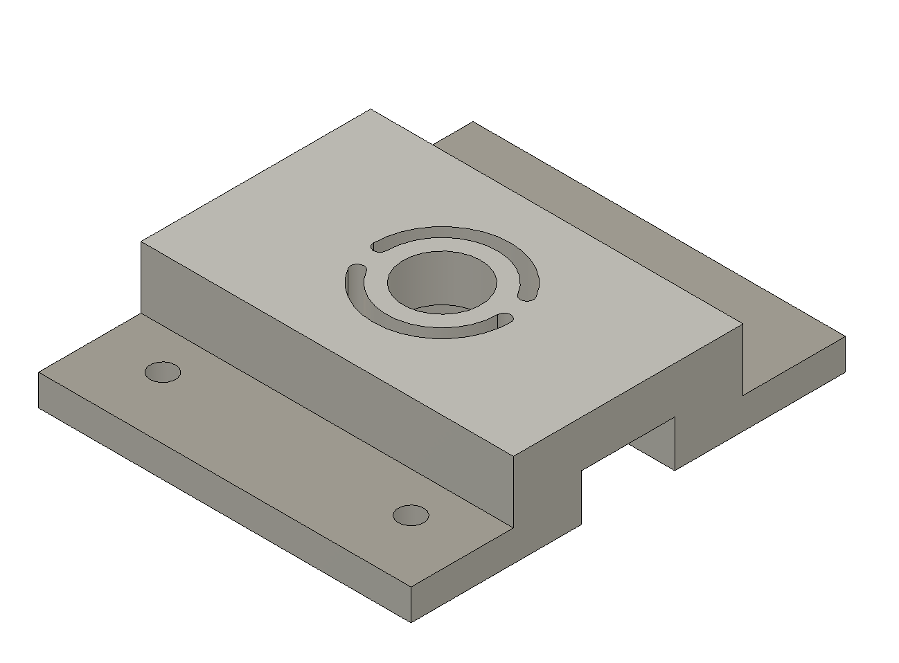
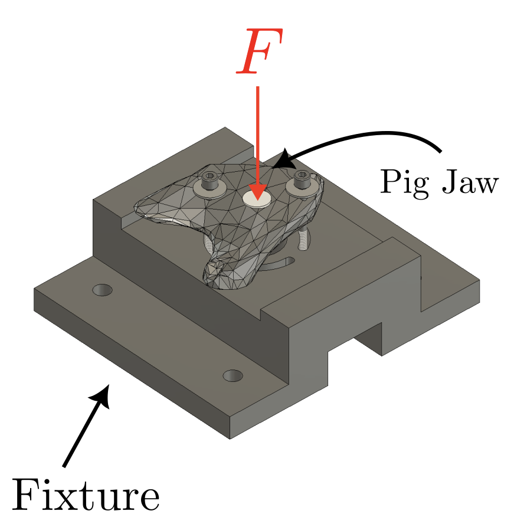
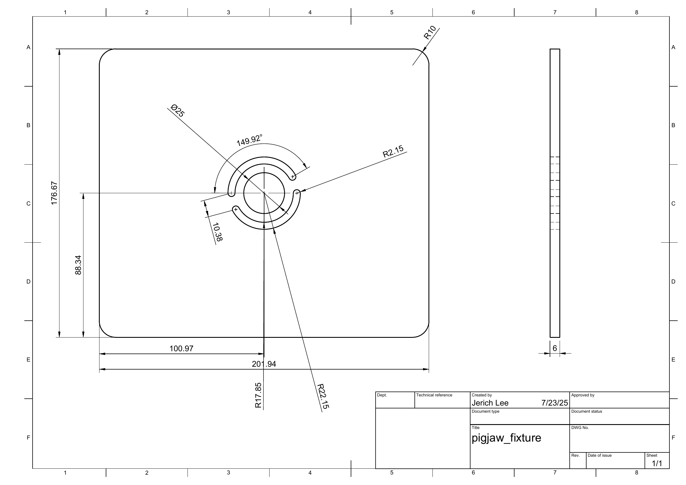
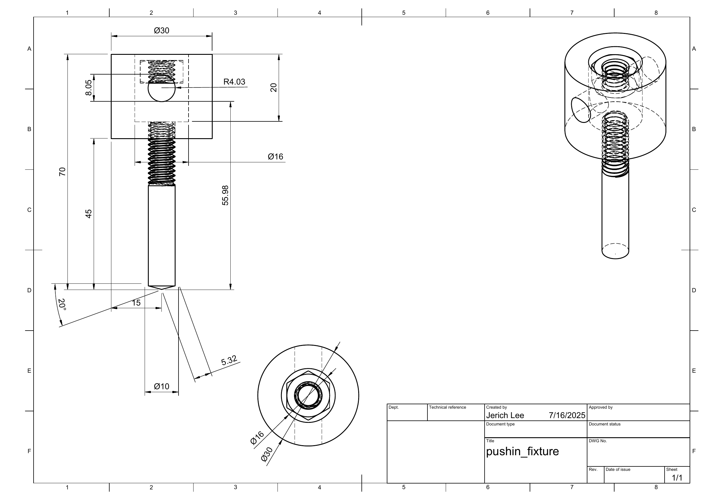

Removing cancer from the jaw can leave a gap too large to heal on its own. Researchers are testing scaffolds that help new bone grow in that gap. The planned push-out test would measure force and displacement to estimate the scaffold–bone construct’s apparent stiffness and assess its mechanical integration.
Pigjaw Scaffold–Bone Interface Mechanical Testing

- Group
- Tissue and Biomechanics Laboratory
- Contribution
- Fixture analysis, model comparison, and metal fixture build
- Methods
- Hand calculations, ANSYS Mechanical, fixture mechanics
- Year
- 2025
- Analysis update
- September 2026
Problem Statement
Situation
Can a low-cost, 3D-printed holder keep the jawbone steady during a test without bending enough to throw off the results?
Task
Hold the jawbone steady so a scaffold can be pushed out to test how firmly it has joined to the bone.
Action
I checked the plastic holder with hand calculations and a computer simulation, and built a metal holder for the planned test.
Result
At an assumed 250 N load, the model predicted 0.131 mm of movement, about 2.6 times the chosen 0.050 mm limit.
Introduction
↑ Back to STARInitial Design
↑ Back to STARThe PLA assessment used a supplied reference geometry with a central opening, a slotted annulus, and narrow connections to the surrounding plate. The thinner central web and interrupted load path made it important to look beyond the fixture’s overall dimensions when estimating stiffness.
The analysis used an assumed 250 N load and a 50 µm maximum annular-motion target. These were screening assumptions, not measured test conditions or validated requirements.
{kind=link}

{kind=link}

Simplified Model
↑ Back to STARI used an equivalent simply supported bridge to estimate global bending and shear deflection. This made the effects of material stiffness, web thickness, and support span easier to examine without resolving every geometric feature.
The following steps expand the retrospective bridge calculation recorded in the September 2026 note. It treats the deck as a short, linear-elastic beam under a central load, not as an as-built model of the metal assembly.

Equivalent geometry and material inputs
Assume a rigid base supports the lower lands, with effective simple supports at \(z=\pm30~\mathrm{mm}\). The span is therefore \(L=60~\mathrm{mm}\), and the central load is the assumed \(F=250~\mathrm{N}\). Use the remaining web thickness, not the overall plate height:
\[
h=30-15=15~\mathrm{mm}
\]
Subtract the full slot envelope from the plate width over the entire span to obtain the equivalent bridge width \(b_g\), cross-sectional area \(A_g\), and second moment of area \(I_g\):
\[
\begin{aligned}
b_g&=120-2(22.15)\\
&=75.7~\mathrm{mm}\\[0.5em]
A_g&=b_gh=(75.7)(15)\\
&=1135.5~\mathrm{mm^2}\\[0.5em]
I_g&=\frac{b_gh^3}{12}=\frac{75.7(15)^3}{12}\\
&\approx21290.6~\mathrm{mm^4}
\end{aligned}
\]
The PLA surrogate uses \(E=2000~\mathrm{MPa}\) and \(\nu=0.35\). With \(1~\mathrm{MPa}=1~\mathrm{N/mm^2}\), the assumed isotropic shear modulus is:
\[
\begin{aligned}
G&=\frac{E}{2(1+\nu)}\\
&=\frac{2000}{2(1+0.35)}\\
&\approx740.7~\mathrm{MPa}
\end{aligned}
\]
Support reactions and nominal bending stress
For a central point load, symmetry and vertical equilibrium give equal support reactions. The maximum bending moment occurs at midspan:
\[
\begin{gathered}
R_A+R_B=F\\
R_A=R_B=\frac{250}{2}=125~\mathrm{N}\\[0.5em]
M_{\max}=\frac{FL}{4}\\
=\frac{250(60)}{4}=3750~\mathrm{N\,mm}
\end{gathered}
\]
Using the outer-fiber distance \(h/2\), the global nominal bending stress is:
\[
\begin{aligned}
\sigma_{g,\max}&=\frac{M_{\max}(h/2)}{I_g}\\
&=\frac{3750(15/2)}{21290.6}~\mathrm{MPa}
\end{aligned}
\]
\[
\boxed{\sigma_{g,\max}\approx1.321~\mathrm{MPa}}
\]
This is the stress in the equivalent bridge, not the peak stress at the annulus or slot-ligament roots. It does not establish a fixture strength rating.
Bending deflection
With zero vertical deflection at the two simple supports, the central-load beam solution gives the midspan bending contribution:
\[
\begin{aligned}
\delta_b&=\frac{FL^3}{48EI_g}\\
&=\frac{250(60)^3}{48(2000)(21290.6)}~\mathrm{mm}\\
&\approx0.02642~\mathrm{mm}
\end{aligned}
\]
\[
\boxed{\delta_b\approx26.42~\mu\mathrm{m}}
\]
Transverse-shear deflection
The bridge is short, with \(L/h=4\), so retain the shear contribution as well. Using a rectangular-section shear correction \(\kappa=5/6\):
\[
\begin{aligned}
\delta_s&=\frac{FL}{4\kappa GA_g}\\
&=\frac{250(60)}{4(5/6)(740.7)(1135.5)}~\mathrm{mm}\\
&\approx0.00535~\mathrm{mm}
\end{aligned}
\]
\[
\boxed{\delta_s\approx5.35~\mu\mathrm{m}}
\]
Combined bridge motion
Add bending and shear to obtain the downward midspan-displacement magnitude under the assumed load:
\[
\begin{aligned}
\delta_g&=\delta_b+\delta_s\\
&\approx0.02642+0.00535\\
&=0.03177~\mathrm{mm}
\end{aligned}
\]
\[
\boxed{\delta_g\approx31.77~\mu\mathrm{m}}
\]
This is approximately 32 µm, below the chosen 50 µm motion screen. The bridge does not resolve local annulus or ligament deformation, however. Its midspan deflection and the FEA’s approximately 131 µm maximum annular motion are different response measures, not matched experimental measurements. Passing this calculation alone does not establish that the full fixture meets the target.
Same geometry, stiffer trial materials
Hold the geometry, supports, and load fixed, and substitute each material’s \(E\) and \(G=E/[2(1+\nu)]\) into the same displacement expression:
\[
\delta_g=\frac{FL^3}{48EI_g}+\frac{FL}{4\kappa GA_g}
\]
For the trial 6061 aluminum properties, \(E=68300~\mathrm{MPa}\) and \(\nu=0.33\):
\[
\begin{aligned}
G_{\mathrm{Al}}&=\frac{68300}{2(1.33)}\\
&\approx25676.7~\mathrm{MPa}\\[0.5em]
\delta_{g,\mathrm{Al}}&\approx0.00077365~\mathrm{mm}\\
&\quad+0.00015434~\mathrm{mm}\\
&\approx0.00092799~\mathrm{mm}
\end{aligned}
\]
\[
\boxed{\delta_{g,\mathrm{Al}}\approx0.928~\mu\mathrm{m}}
\]
For the trial 304 stainless-steel properties, \(E=200000~\mathrm{MPa}\) and \(\nu=0.30\):
\[
\begin{aligned}
G_{\mathrm{steel}}&=\frac{200000}{2(1.30)}\\
&\approx76923.1~\mathrm{MPa}\\[0.5em]
\delta_{g,\mathrm{steel}}&\approx0.00026420~\mathrm{mm}\\
&\quad+0.00005152~\mathrm{mm}\\
&\approx0.00031572~\mathrm{mm}
\end{aligned}
\]
\[
\boxed{\delta_{g,\mathrm{steel}}\approx0.316~\mu\mathrm{m}}
\]
Finite Element Analysis
ANSYS modeled the full PLA fixture with annular pressure, compression-only backing, and idealized washer restraints, excluding bone, scaffold, and interface failure.
At the assumed load, the model predicted approximately 131 µm of maximum downward annular motion, above the selected target. Hand-calculation results are not directly interchangeable; local stresses need further assessment.

Displacement Comparison
↑ Back to STARAt the same assumed 250 N load, the PLA bridge predicts 31.77 µm of midspan motion, while the final M2 FEA predicts 131.37 µm of maximum downward annular motion. The FEA exceeds the chosen 50 µm annular-motion target; the bridge’s smaller result does not establish that the complete fixture meets it.
Predicted motion at 250 N
Metal bridge estimates: expanded scale
On smaller screens, scroll the table horizontally to read all columns.
| Material and model | Motion (µm) | Response and model scope |
|---|---|---|
| PLA · analytical | 31.77 | Midspan bending plus shear; equivalent 60 mm simply supported bridge, 15 mm web. |
| PLA · final M2 FEA | 131.37 | Maximum downward motion on the loaded annulus; full reference fixture with backing and idealized hold-downs. |
| 6061 aluminum · analytical | 0.928 | Same 60 mm bridge, with trial aluminum properties; no metal FE result. |
| 304 stainless · analytical | 0.316 | Same 60 mm bridge, with trial stainless-steel properties; no metal FE result. |
Metal Fixture
Following the PLA analysis, I built the metal push-out fixture shown here. The assembly includes the push-out plate, an adapter, and a threaded pusher connection.
Hand calculations also compared aluminum and stainless steel as stiffer material options for the same simplified geometry. These comparisons supported considering metal, but no metal FEA or physical qualification of the completed assembly is included in this analysis.




Outcome
This work connected a simplified structural model, a more detailed numerical assessment, and a physical fixture build. The PLA results identified a compliance concern and showed why passing the bridge calculation was not enough to establish the full fixture’s behavior. They did not demonstrate fracture. The next step is to confirm the actual test requirements and measure the completed assembly’s motion under representative loading.